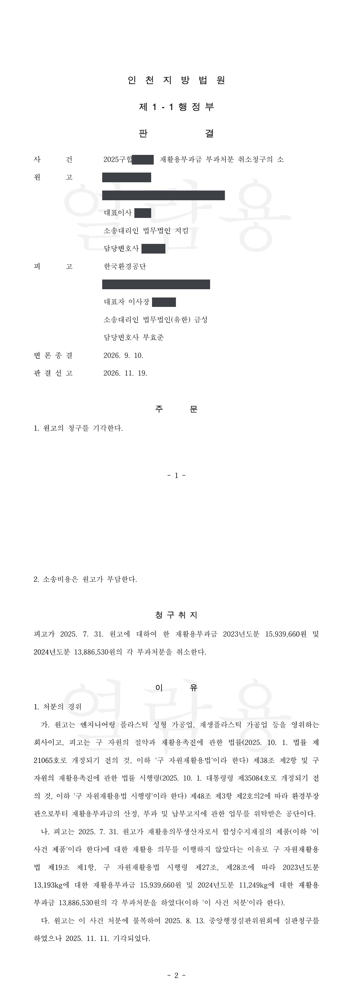

저온저장고용 합성수지 문틀 형재에 대한 재활용부과금 부과처분 취소소송
인천지방법원 · 담당변호사 부효준
판결문

사건의 요지
조립식 저온저장고의 출입문 둘레에 쓰이는 폴리염화비닐(PVC) 형재를 만들어 냉동판넬 제작업체에 납품하는 회사가 「자원의 절약과 재활용촉진에 관한 법률」상 재활용의무를 이행하지 않았다는 이유로 2023년도분과 2024년도분 재활용부과금 부과처분을 받은 사건입니다. 이 제품이 시행령 [별표 3의2]의 재활용의무대상 제품인 '창틀·문틀'에 해당하는지, 건축물에 쓰이지 않는 제품이나 중간재도 부과 대상인지, 종전 출고·수입실적 승인에 비추어 신뢰보호원칙에 어긋나는지가 다투어졌고, 처분이 모두 적법하다고 판단되었습니다.
사건의 주요 내용
원고는 플라스틱 성형 가공업을 하는 회사로, 일정한 단면 모양으로 길게 압출한 폴리염화비닐(PVC) 재질의 형재(프로파일)를 만들어 조립식 저온저장고를 시공하는 냉동판넬 제작업체에 납품해 왔습니다. 이 형재를 잘라 네 개를 직각으로 맞추면 사각형의 틀이 되어 저온저장고 출입문의 개구부 둘레를 이루고, 여기에 저온저장고의 문이 달립니다.
「자원의 절약과 재활용촉진에 관한 법률」 제16조는 대통령령으로 정하는 제품·포장재의 제조업자·수입업자(재활용의무생산자)에게 그 폐기물을 회수하여 재활용할 의무를 지우고, 제19조는 이 의무를 이행하지 않으면 재활용부과금을 부과하도록 정하고 있습니다. 2022년 5월 시행령 개정으로 합성수지 재질의 '창틀·문틀'이 재활용의무대상 제품에 새로 들어갔고, 2023년 1월 1일 이후 출고되는 제품부터 적용되었습니다.
재활용부과금의 부과·징수 업무를 위탁받은 처분청은 2025년 7월, 원고가 재활용의무생산자인데도 이 제품에 대한 재활용의무를 이행하지 않았다는 이유로 2023년도분(약 13톤)과 2024년도분(약 11톤)에 대하여 각 1천만여 원의 재활용부과금을 부과하였습니다. 원고는 행정심판을 청구하였으나 2025년 11월 받아들여지지 않았고, 이어 처분의 취소를 구하는 소송을 제기하였습니다. 부효준 변호사는 처분청을 대리하였습니다.
쟁점
- 저온저장고 출입문의 둘레에 쓰이는 합성수지 형재가 시행령 [별표 3의2]의 재활용의무대상 제품인 '창틀·문틀'에 해당하는지
- 건축물에 쓰이지 않는 제품, 다른 제품의 제작에 들어가는 중간재, 다른 재료와 섞여 재활용이 어렵다는 제품도 재활용부과금의 부과 대상인지
- 출고·수입실적 신고의 승인이나 부과금을 부과하지 않은 것이 신뢰보호원칙의 공적인 견해표명에 해당하는지
원고의 주장
- 이 제품은 최종 제품이 아니라 냉동판넬을 만드는 데 들어가는 중간재에 불과하고, 중간재 생산자는 재활용의무생산자가 아니라고 주장하였습니다. 폐기물부담금은 최종 단계 제품을 이루는 재료·부품을 부과 대상에서 빼고 있으므로 재활용부과금도 같게 해석하여야 한다고 하였습니다.
- 재활용의무대상인 '창틀·문틀'은 건축물에 쓰이는 것이어야 하는데 저온저장고는 건축물이 아니고, 저온저장고의 문은 틀 바깥에 붙고 밀폐되어야 해서 새시 형태가 될 수 없으므로 이 제품은 부과 대상이 아니라고 주장하였습니다.
- 이 제품에 우레탄을 주입하여 냉동판넬을 만들면 서로 분리할 수 없어 재활용이 불가능하므로, 재활용할 수 없는 제품에 재활용부과금을 부과하는 것은 부당하다고 주장하였습니다.
- 처분청이 2023년도분 출고·수입실적 신고를 승인하고 그해 부과금을 부과하지 않은 것은 재활용의무와 부과금이 없다는 공적인 견해표명이므로, 적어도 2023년도분 부과처분은 신뢰보호원칙과 금반언의 원칙에 어긋난다고 주장하였습니다.
부효준 변호사의 주장
- 시행령 [별표 3의2]는 재활용의무대상 제품을 한국표준산업분류상 '플라스틱 선, 봉, 관 및 호스 제조업' 또는 '플라스틱 창호 제조업'의 제조대상으로 정하고 있을 뿐 사용 장소를 건축물로 한정하지 않는다는 점, 이 제품은 저온저장고 출입문의 둘레를 이루어 문이 달리는 틀이 되므로 문틀에 해당한다는 점을 제품 사진과 결합 견본으로 밝혔습니다.
- 폐기물부담금과 재활용부과금은 목적·요건·부과 대상·산정방식이 서로 다른 제도이므로 폐기물부담금의 중간재 제외 규정을 재활용부과금에 끌어올 수 없고, 재활용이 불가능하다는 점은 증명되지 않았으며 이를 제외 사유로 정한 규정도 없다고 주장하였습니다.
- 출고·수입실적의 승인은 원고가 낸 해당 연도 출고·수입량을 확인한 것일 뿐 이 제품이 재활용의무대상인지에 관한 견해를 밝힌 것이 아니므로, 신뢰보호원칙이 적용되기 위한 공적인 견해표명이 없다고 주장하였습니다.
법원의 판단
법원은 표준국어대사전의 '창틀'·'문틀'·'새시'의 뜻과 한국표준산업분류가 '플라스틱 선, 봉, 관 및 호스 제조업'과 '플라스틱 창호 제조업'을 정의한 내용을 종합하여, [별표 3의2]의 '창틀·문틀'은 창문이나 문을 달거나 끼우기 위한 틀을 만드는 데 쓰이는 합성수지 재질의 제품을 뜻한다고 보았습니다. 이 제품은 잘라서 네 개를 직각으로 맞추면 저온저장고 출입문의 둘레를 이루고 여기에 문이 달리므로 문틀에 해당한다고 판단하였습니다.
건축물용에 한정된다는 주장에 대하여는, 기준이 사용 장소나 용도를 건축물로 한정하고 있지 않고, 합성수지 재질의 창틀·문틀인 이상 사용 장소에 따라 재활용 가능성이 크게 달라질 것으로 보이지 않으며, 기준이 나란히 정한 '플라스틱 선, 봉, 관 및 호스 제조업'은 건축용 플라스틱제품 제조업의 하위분류가 아니라는 점을 들어 받아들이지 않았습니다.
중간재라는 주장에 대하여는, 폐기물부담금과 재활용부과금은 목적·요건·부과 대상·산정방식을 달리하는 제도여서 폐기물부담금에서 중간재가 제외된다고 하여 재활용부과금에도 같게 적용할 근거가 없고, 냉동판넬이나 저온저장고가 재활용의무대상 제품이라고 볼 자료가 없어 이중 부과도 아니라고 하였습니다. 우레탄과 섞이면 재활용할 수 없다는 주장도 그렇게 볼 증거가 없고 이를 제외 사유로 정한 규정도 없다고 보았습니다.
신뢰보호원칙에 관하여는 대법원 2006. 6. 9. 선고 2004두46 판결의 요건을 기준으로, 출고·수입실적의 승인은 해당 연도의 출고·수입량을 확인한 것일 뿐이고, 원고가 다른 회사에 납품되는 실적으로 신고한 데 따라 부과금을 부과하지 않았다고 하여 장차 부과하지 않겠다는 공적인 견해를 표명한 것으로 보기에 부족하다고 판단하여, 원고의 청구를 받아들이지 않았습니다.
이를 종합하면, 이 사건 기준에서 규정된 ’창틀․문틀‘은 창문이나 문을 달거나 끼우기 위한 틀을 제작하기 위해 사용되는 합성수지 재질의 제품을 의미한다고 봄이 타당하다.
인천지방법원 판결 이유 '4. 가. 2) 가) (3)'
그러나 이 사건 기준은 창틀 또는 문틀의 사용 장소나 용도를 건축물에 한정하고 있지 않은 점, 합성수지 재질의 창틀․문틀에 해당하는 이상 그 사용 장소에 따라 재활용 가능성 등이 크게 달라질 것으로 보이지도 않는 점, 원고는 한국표준산업분류상 ’플라스틱 창호 제조업‘(C22223)은 ’건축용 플라스틱제품 제조업’(C2222)의 하위분류에 해당함을 근거로 드나, 이 사건 기준에서 병렬적으로 규정한 ‘플라스틱 선, 봉, 관 및 호스제조업’(C22211)은 이에 해당하지 않는 점 등에 비추어, 위 주장은 받아들이기 어렵다
인천지방법원 판결 이유 '4. 가. 2) 가) (4)'
피고의 승인은 어디까지나 원고가 제출한 해당 연도의 출고 및 수입량에 대한 확인일 뿐, 이 사건 제품 중 2023년분이 재활용의무 대상 제품인지에 관한 행정청의 공적인 견해표명이 있었다고 보기 어렵다.
인천지방법원 판결 이유 '4. 나. 2) 다)'
※ 판결 이유 가운데 이 사건의 판단 기준이 된 부분을 그대로 옮긴 것으로, 당사자 이름 등은 가리고 금액은 어림으로 적었습니다.
이 사건이 보여 주는 것
재활용의무대상 제품에 해당하는지는 제품이 어디에 쓰이는지가 아니라 시행령 [별표 3의2]가 정한 제조업 분류와 제품의 실제 기능에 따라 판단됩니다. 건축물이 아닌 설비에 들어가는 제품이나 다른 회사의 완제품에 쓰이는 형재라도, 문이나 창을 달기 위한 틀로 쓰이는 합성수지 제품이면 생산자책임재활용제도(EPR)의 적용을 받습니다. 폐기물부담금의 예외 규정이 재활용부과금에 그대로 적용되지 않는다는 점도 확인되었습니다.
출고·수입실적 신고가 승인되었거나 한동안 부과금이 부과되지 않았다는 사정만으로는 신뢰보호원칙을 주장하기 어렵습니다. 제품이 재활용의무대상인지 분명하지 않다면 출고 전에 대상 여부를 확인하고, 대상이라면 재활용의무를 직접 이행하거나 재활용사업공제조합을 통해 이행할 방법을 미리 마련해 두는 것이 안전합니다.
비슷한 처분을 받으셨다면
행정처분은 처분이 있음을 안 날부터 90일 이내에 행정심판이나 취소소송으로 다투어야 하고, 기간이 지나면 돌이킬 수 없는 처분은 집행정지를 서둘러야 합니다. 처분서를 받은 날짜부터 확인해 드립니다.